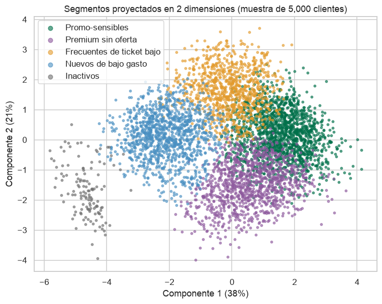

Segmentación de clientes y efectividad de campañas: propuesta para la Dirección de Marketing de Starbucks
Cada punto es un cliente: así se reúnen en grupos según cómo compran y cómo responden a las ofertas.
Si solo leen una lámina, que sea esta
Con una oferta activa, el cliente gasta de 2 a 3.5 veces más por día. Las ventas suben después de cada envío.
Todos los segmentos recibieron las mismas ofertas, y 3 de cada 10 dólares de recompensa ($48 mil) se pagaron a quien nunca vio la oferta.
Mandar a cada segmento lo que le funciona, siempre por redes sociales: una respuesta puede costar hasta 6 veces menos.
Qué pasó en 30 días de campaña y quiénes son nuestros clientes
Seis envíos de ofertas a 17,000 miembros de la app de recompensas
Ventas por día durante la campaña; las líneas punteadas marcan los 6 envíos
Clientes con perfil completo (14,825); 1 de cada 8 no tiene datos demográficos
Seis grupos con hábitos muy distintos y cómo cambian con el tiempo
Los agrupamos según quiénes son y cómo compran; los 2,175 sin datos van aparte
Participación de cada segmento en el número de clientes y en las ventas del mes
Haz clic en una tarjeta para ver edad, ingreso y antigüedad
Cada 6 días clasificamos a cada cliente por lo que gastó: Inactivo ($0), Bajo (hasta $10), Medio ($10 a $30) o Alto (más de $30)
Qué se vio, qué se pagó y qué sí cambió el comportamiento
Una oferta se completa sola al llegar al gasto mínimo, aunque el cliente nunca la haya abierto
El canal decide si la oferta llega a los ojos del cliente
Los dos 2x1 de $10 se llevaron $69 mil (43 % de todas las recompensas) y funcionan apenas 34 a 36 %
% de ofertas que funcionaron por segmento · ★ = la mejor oferta para cada grupo
La oferta correcta, para la persona correcta, por el canal correcto
Aplican a cualquier segmento y no requieren presupuesto adicional
Las ofertas con redes se ven 92 % de las veces; sin ellas, 48 %. Es el cambio más barato y con mayor efecto.
La recompensa se activa únicamente si el cliente abrió la oferta. Ahorro de hasta $48 mil en una campaña como esta.
Dejar a 10 % de cada segmento sin ofertas para medir cuánto venden de más las ofertas (ventas incrementales) y su retorno real.
Activen las palancas y vean el impacto con los mismos clientes y el mismo número de ofertas
De ajustes inmediatos a una medición del retorno real
“No se trata de mandar más ofertas, sino la oferta correcta a la persona correcta.”
Datos y limpieza · variables · elección del número de segmentos · estabilidad · matriz de transición · validación del equipo · glosario y limitaciones
portfolio.jsontipo, gasto mínimo, recompensa, vigencia, canalesprofile.jsonedad, género, ingreso, fecha de altatranscript.json139 mil compras · 76 mil recibidas · 58 mil vistas · 33 mil completadas| Problema | Diagnóstico | Decisión |
|---|---|---|
| Edad = 118 (relleno) | 2,175 | Nulo; sin género ni ingreso → grupo “Sin perfil”, sin imputar |
| Renglones duplicados | 397 | Eliminados (todos “oferta completada”: duplicaban recompensas) |
| Llave de oferta inconsistente | “offer id” / “offer_id” | Unificada para cruzar recibidas, vistas y completadas |
| Vistas después de vencer | 1,158 | No cuentan como vista (no pudieron influir) |
| Misma oferta recibida varias veces | 12,989 | Cada evento se asigna a la recepción más reciente vigente |
| Compras atípicas (hasta $1,062) | 478 > $100 | Se conservan; tope en percentil 99 solo para el modelo |
Unidad de análisis: el cliente · 14,825 clientes con perfil completo · 8 variables
| Variable | Qué mide | Promedio |
|---|---|---|
| Edad | Años | 54 |
| Ingreso anual (USD) | Ingreso declarado | $65,405 |
| Antigüedad (días) | Días desde el registro | 517 |
| Visitas al mes | Compras en 30 días | 8.2 |
| Gasto mensual (USD) | Suma de compras | $104 |
| Ticket promedio (USD) | Gasto ÷ compras | $13 |
| % de ofertas vistas | Vistas ÷ recibidas | 74 % |
| % de ofertas que funcionaron | 2x1 y descuentos que funcionaron ÷ recibidos | 38 % |
K-Means con 10 arranques por cada k de 2 a 8 · silueta en muestra de 6,000 clientes
| k | Inercia | Silueta | D-B |
|---|
Proyección en 2 componentes principales (59 % de la varianza) · muestra de 5,000 clientes

5 periodos de 6 días · cortes $10 y $30 por terciles del gasto · 17,000 clientes × 4 pares = 68,000 transiciones
Cada integrante segmentó por su cuenta con 2, 3 y 5 grupos: los patrones se repiten
| 2 grupos | 3 grupos | 5 grupos + sin perfil | |
|---|---|---|---|
| Grupo de mayor valor | 64 % de clientes · $150/mes | 53 % · $156/mes | Promo-sensibles 27 % · $197/mes |
| Su peso en ventas | ≈ 92 % | 81 % | 52 % (78 % con Premium) |
| Grupo de menor valor | 36 % · $24/mes · éxito 20 % | 31 % · $22/mes · 13 % | Nuevos 20 % · $22/mes · 11 % |
| Mejor oferta | Descuento $2 al gastar $10 · 10 días, en los tres análisis | ||
| Bajo consumo | Responde mejor a la informativa que a los 2x1, en los tres análisis | ||
| Estabilidad | Alto valor se queda 98 % | Frecuente semanal se queda 62 % | Alto se queda 48 % (6 días) |
| Silueta | — | 0.184 | 0.212 |
2x1 o descuento visto antes de completarse; informativa vista con compra posterior dentro de la vigencia.
El cliente alcanzó el gasto mínimo y se pagó la recompensa, pero nunca abrió la oferta (o la abrió después).
Recompensa total pagada en una oferta ÷ número de veces que funcionó. Incluye lo pagado sin vista.
Gasto total del cliente ÷ número de compras en los 30 días.
Gasto en las horas con una oferta vista y vigente, contra el resto del mes, llevado a USD por día.
Inactivo $0 · Bajo hasta $10 · Medio $10 a $30 · Alto más de $30.
Clientes a los que a propósito no se envía oferta, para comparar y medir el efecto real (ventas incrementales).
2x1: producto igual gratis al alcanzar el gasto mínimo. Descuento: $ de descuento al gastar un mínimo. Informativa: solo comunica.